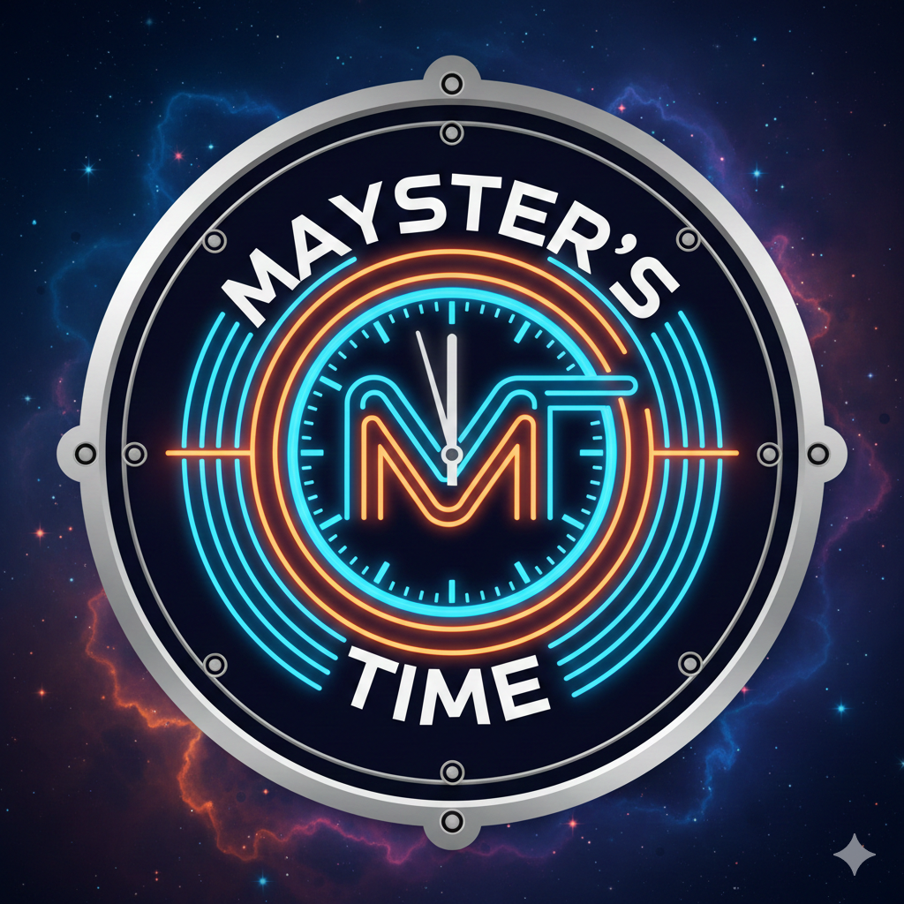

Tune in and let us turn your day upside down!
▶️ Słuchaj radiaAktualności:
| data | godzina | wydarzenie |
|---|---|---|
Jak słuchać na telefonie w tle?
Oto instrukcja w kilku prostych krokach:
- Pobierz aplikację VLC.
- Przejdź do "Więcej".
- Kliknij przycisk "Nowy strumień".
- Wklej poniższy link.
- Kliknij strzałkę lub enter by zakończyć.
- Wyjdź z widoku odtwarzacza.
- Kliknij trzy kropki przy ikonce stacji.
- Kliknij "Zmień nazwę".
- Wpisz nazwę podaną na stronie lub inną wedle swoich preferencji, żebyś potem rozpoznał(a).
Pamiętaj żeby dodać nazwę stacji